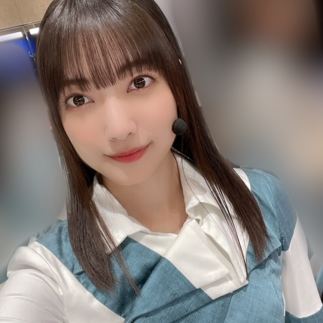
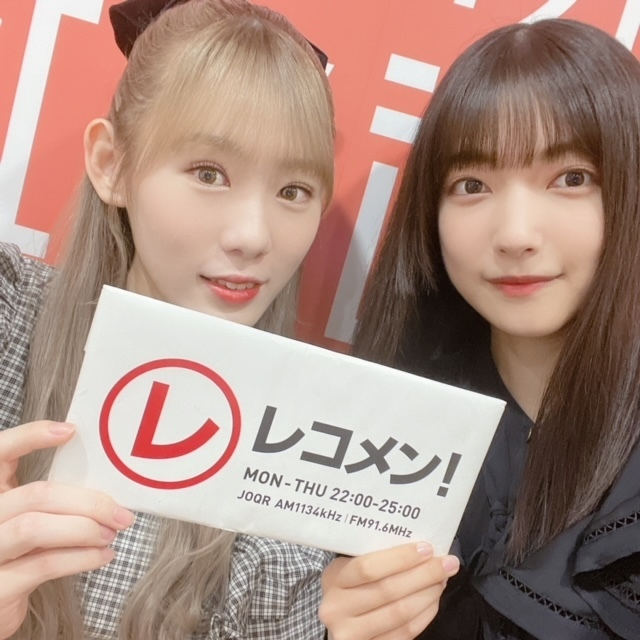
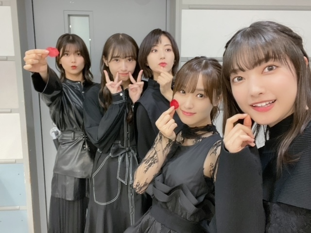
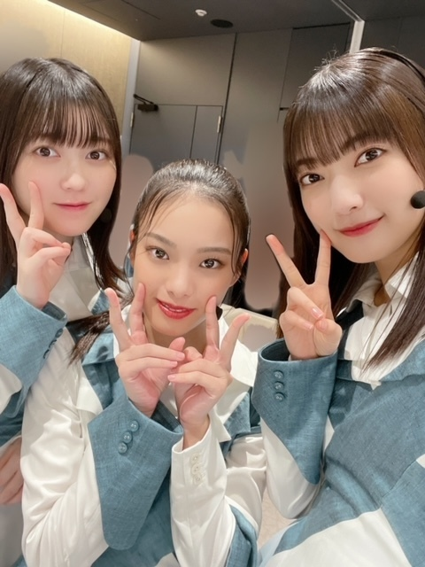
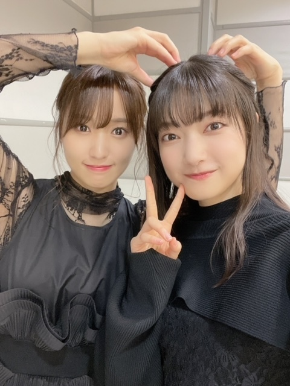

初めての逆電は儚いもので、
ほんの数秒で終了
というか強制終了
ラジオでリスナーさんと電話でお話しする憧れの企画は、レコメン！「櫻吹雪祭り」の中で、
『赤ちゃん選手権』
という名で行わた
各選手が残した強すぎる衝撃を称えたいです

今回は鬼滅の刃の禰󠄀豆子選手権、セミ選手権、赤ちゃん選手権が開催されました！
○○選手権の○○の部分にリスナーさんがなりきってくれるというものです
衝撃すぎて説明し難いのですが
とてもとても面白かったです!!!
またやりたいです!!!
聴いてくださったみなさん、ありがとうございました！
みぃさんと私の放送は10月5日（火）だったので、
Radikoで10月10日（日）まで配信されています✨
聴き逃してしまった方は是非〜〜*

先日の「CDTV ライブ！ライブ！」
見てくださったみなさんありがとうございました！
「流れ弾」テレビ初披露でした✴︎
MVのままの世界観で、
フルサイズをパフォーマンスさせていただきました！
ありがとうございました🥀
踊ってみた企画では、
YOASOBIさんの「怪物」をパフォーマンスさせていただきました！
自分たちの曲とは別の緊張感を味わうことができて、
特別な経験になりました🐺
ありがとうございました！

「MTV LIVE match」
お越しくださったみなさん、ありがとうございました
Buddiesのみなさんに勇気をいただきました✨
同日の出演者のファンのみなさんもありがとうございました！この日をきっかけに櫻坂46を好きになったよ〜という方がいらっしゃったら嬉しいです🌸
レンガに書いてくださっていたメッセージもしっかり見ましたよ〜〜!!!

🤍今日！10月9日（土）18:56〜
テレビ朝日『池上彰のニュースそうだったのか！！』
友香さんと出演させていただきます✨
家族でよく見ていた番組だったのでとても嬉しいです
「外番組でMCのお2人とご一緒する」という今年の目標があって、
今回澤部さんとご一緒できて半分達成できました！
初めての出演で緊張していましたが、
友香さんが挨拶の仕方やスタジオへの入り方など沢山のことを背中で教えてくださいました*
ありがとうございました：）
ニュースに関する学びも、外番組での学びもたくさんありました、、
次に活かせるように自分の中に大事に覚えておこうと思います

🤍10月12日（火）7:30〜8:55
ラジオ、InterFM897「MUSIClook」に8:15頃〜出演します✨
是非お聴きください〜！
そしてそして！
今日から2日間、
大阪公演楽しみましょう〜♡
大園玲